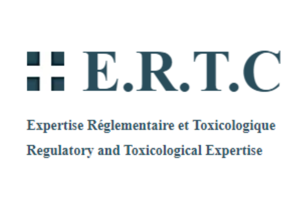

Bilan du Stage de Deuxième Année (8 semaines)
Sommaire :
Description
ERTC est une entreprise qui accompagne les professionnels du secteur cosmétique (fabricants, conditionneurs, importateurs, distributeurs ou exportateurs) dans la mise aux normes réglementaires de leurs produits afin de les commercialiser dans l’UE (Union Européenne) et également hors de l’UE en fonction des réglementations à appliquer. Le travail proposé est une application python pour une utilisation interne, permettant de créer des formules de produits cosmétiques...
Compétences mises en œuvre
Compétences en développement en Python, manipulation de données en CSV, interaction avec une base de données SQL, création de DataFrames, gestion complète du projet, utilisation d'outils informatiques, création de fichiers PDF et XLS, compétences en planification de projet, compétences en déploiement, travail en autonomie...
Outils :
Visual Studio Code, Trello, Git et GitHub, Pencil (interface), Looping (schéma de Base de donnée), SQLiteStudio, invite de commande (environnement virtuel, etc.)
Liste non exhaustive des bibliothèques Python :
Pandas, NumPy, Matplotlib, Tkinter, CSV, SQLite3, PyPDF2, re, PyInstaller (déploiement).
Compétences mises en œuvre :
- Développement en Python :
- Manipulation de données en CSV :
- Interaction avec une base de données SQL :
- Conception et utilisation d'une base de données SQL :
- Création de DataFrames :
- Gestion complète du projet :
- Implication individuelle dans toutes les phases du projet :
- Utilisation d'outils informatiques :
- Utilisation d'environnements de développement intégrés (IDE), de systèmes de contrôle de version (Git/GitHub), etc. :
- Création de fichiers PDF et XLS :
- Compétences en planification de projet :
- Compétences en déploiement :
- Travail en autonomie :
Travaux sur les Blocs :
Bloc 1 :
- B1.2 : Répondre aux incidents et aux demandes d’assistance et d’évolution
- B1.4 : Travailler en mode projet
- B1.5 : Mettre à disposition des utilisateurs un service informatique
- B1.6 : Organiser son développement professionnel
Bloc 2 :
- B2.1 : Concevoir et développer une solution applicative
- B2.2 : Assurer la maintenance corrective ou évolutive d’une solution applicative
- B2.3 : Gérer les données
Développemnt d'une application en python, base de donnée SQLite, manipulation de données,
dataframes, fichier csv. Calculs effectués dans les tableaux, affichés en pdf et xls.
Interface en tkinter. Utilisation de plusieurs bibliothèque python. J'ai géré ce projet
de la planification au design d'interface au déploiement.